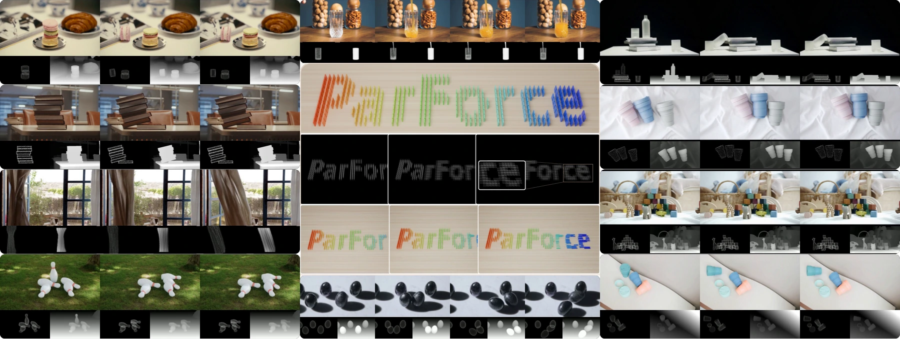
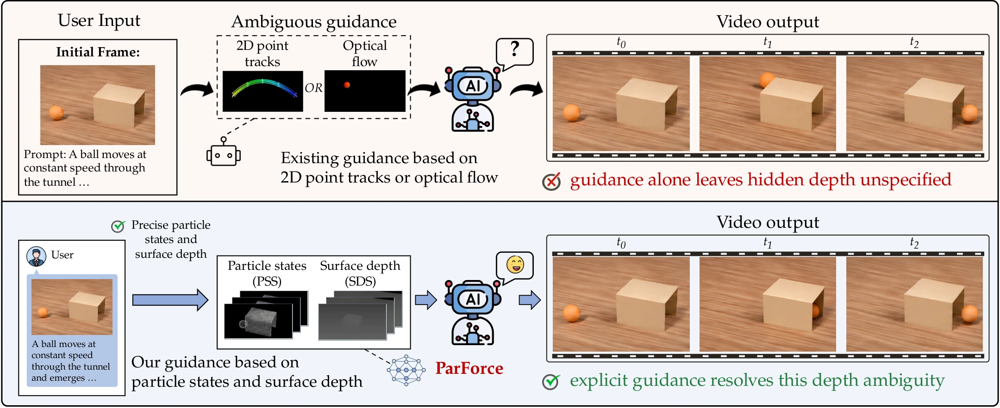
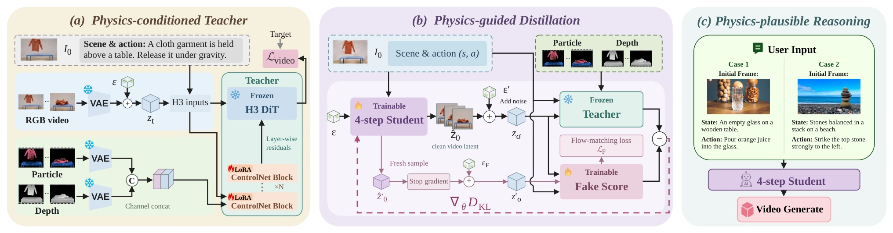

Perspective particle states
Projected particles encode the ball’s camera-space depth, including when the tunnel hides it.

ParForce uses projected particle states and surface depth to guide motion and occlusion in generated videos. We train on simulated video–particle–depth triplets and real video–depth pairs. Under matched-backbone comparisons, ParForce reduces FVD by up to 74.4% and optical-flow endpoint error by up to 57.1%. A distilled four-step student generates video from a first frame and text, improving the Physics-IQ Verified score by 7.36 points over H3 Turbo4.
Read the full abstract in the paperMotivation
A ball rolling through a tunnel and one rolling behind it can trace nearly the same path in the image. To render the instructed motion, a video model needs to know where the ball is in depth and when the tunnel should hide it.

Projected particles encode the ball’s camera-space depth, including when the tunnel hides it.
Depth maps describe the visible tunnel surfaces, helping the generator place occlusion boundaries.
Method
Starting with a first frame and an instruction, the constructor reconstructs the scene, simulates the action, and renders aligned particle and depth sequences for the teacher.

The teacher uses both sequences to guide the video as objects move, make contact, and pass behind surfaces.
The frozen teacher provides particle- and depth-conditioned guidance while the student learns from a first frame and text.
At inference, the student takes the first frame and text and produces the video in four denoising steps.
Explore real and simulated scenes, compare generated videos and their controls side by side, and see how mixing real video into training changes the results.
Largest reductions against motion-conditioned methods.
Compare the four-step student’s videos from a first frame and text across examples of rolling, collisions, and falling objects.
Scores use the benchmark’s official first frames and prompts.